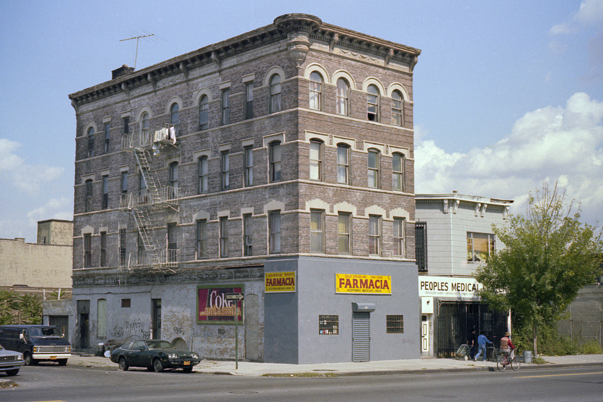

Myrtle Avenue: Farmacia, General View
Here’s another shot taken at 519 Myrtle Avenue in Brooklyn. We are adjacent to the Clinton Hill neighborhood—between Pratt Institute and the Navy Yard here.
One image by Richard Koenig; taken in the fall of 1981.